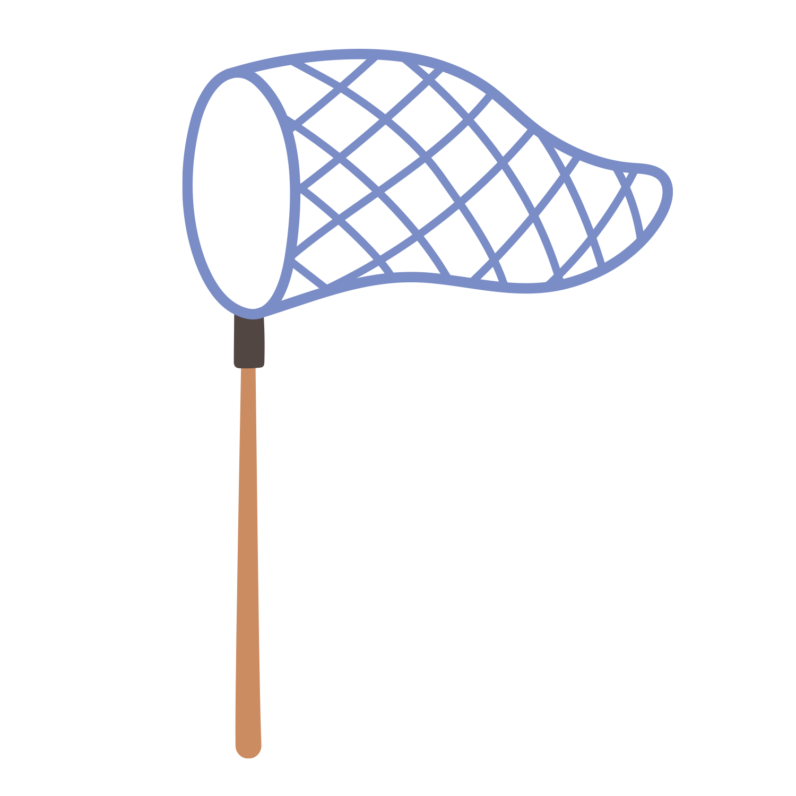
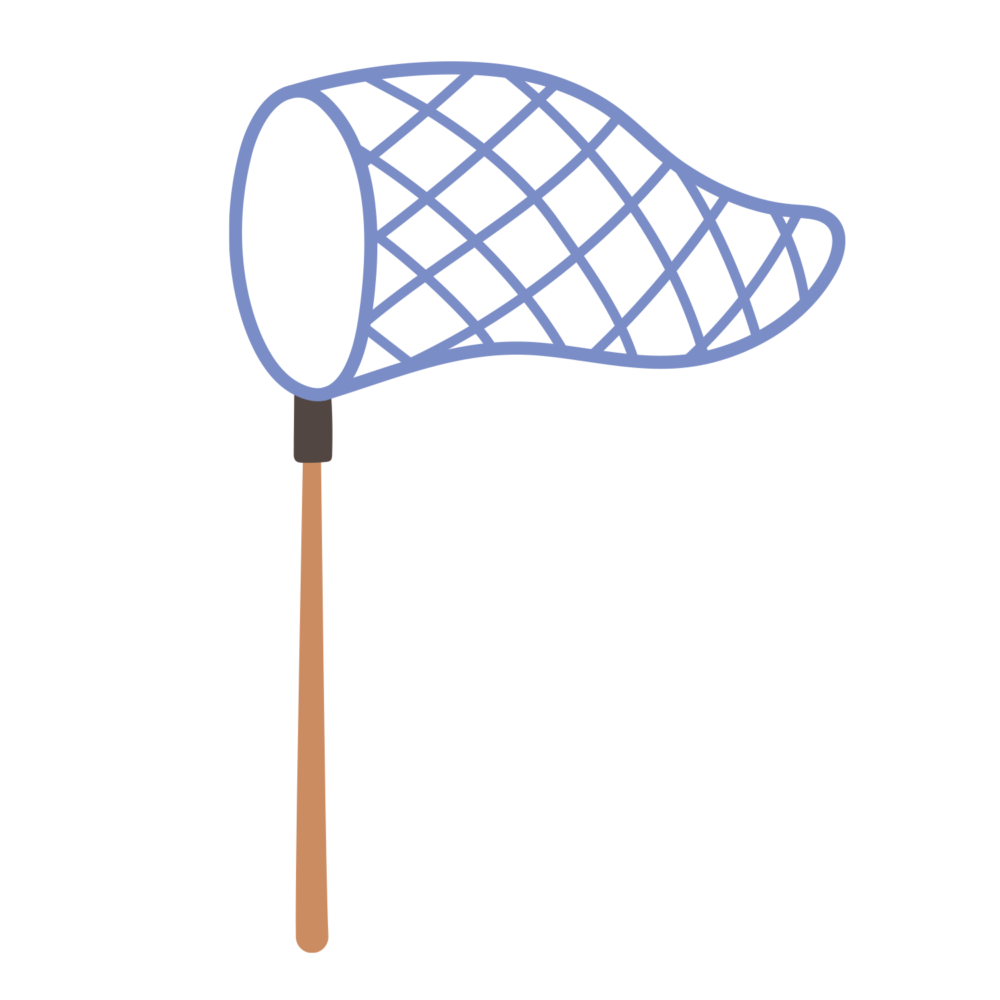
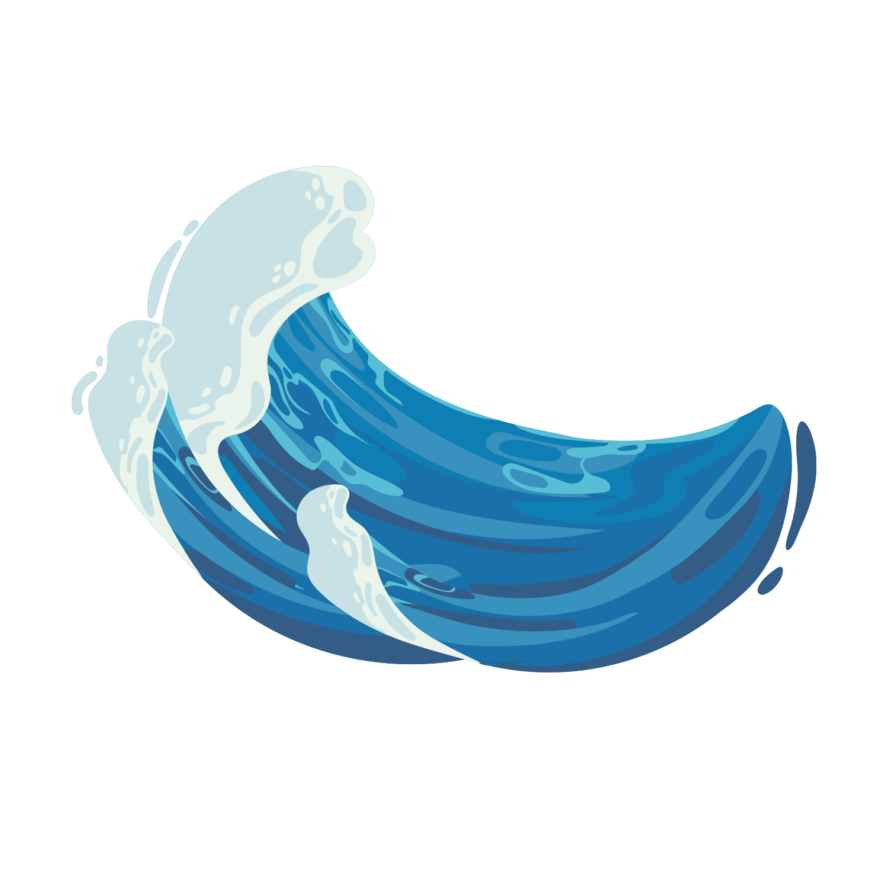
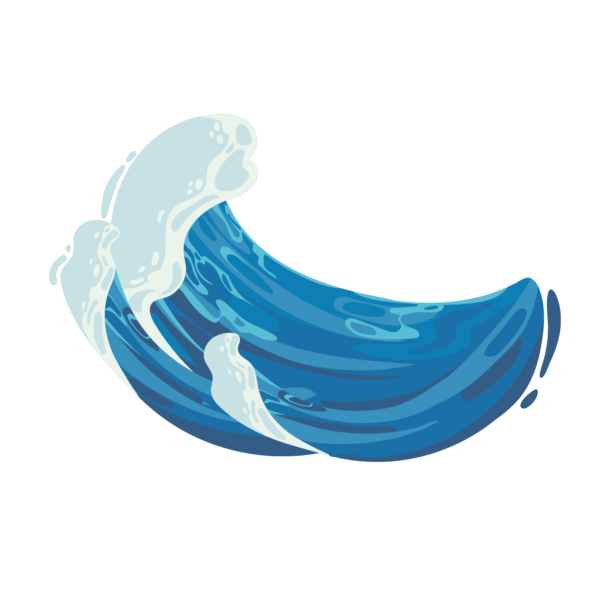

The Problem: The Plastic Crisis
Turn The Tides With TideTurners
Every year, millions of tons of plastic pollute our oceans, threatening marine life, ecosystems, and human health. At TideTurners, we’re taking action with cutting-edge cleanup technology and smart waste prevention strategies. Our mission is simple: remove plastic from waterways, push for sustainable policies, and educate communities on ocean conservation.
We’re not just picking up trash—we’re creating lasting change. Backed by science and driven by impact, our scalable solutions restore ocean health while tackling the root causes of plastic pollution. From deploying innovative cleanup systems to working with businesses on sustainable practices, we’re turning the tide on waste before it reaches the sea. The problem is massive, but so is the opportunity to fix it. By partnering with governments, companies, and individuals, we’re building a future where clean oceans aren’t just a dream—they’re a reality.
Join us. Whether through support, collaboration, or action, you can be part of the solution. Let’s make ocean pollution history.
 

Collect
Trash From Oceans & Beaches
 

Make Waves

Get Involved: Be Part of the Solution
Our oceans are drowning in plastic. Every year, over 11 million tons of plastic waste enter our oceans—killing marine life, disrupting ecosystems, and even making its way into the seafood we eat. If we don’t act now, the problem will only worsen, with plastic waste projected to triple by 2040.
- Volunteer
- Donate
- Partner with Us